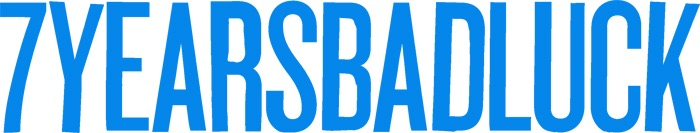
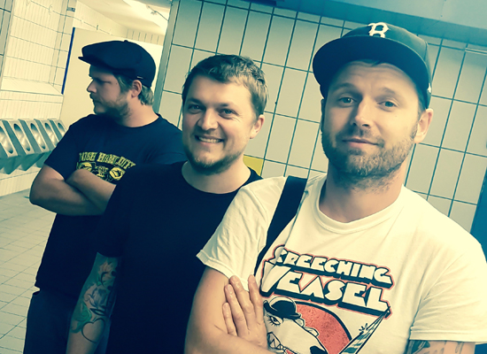

SHOWS
- 2017/08/09
- Innsbruck (at) @ p.m.k. w/ Chixdiggit!, Sweatpants Party
- 2017/08/10
- Linz (at) @ Auerhahn w/ Face To Face, Good Riddance
- 2017/08/11
- Wien (at) @ Rhiz w/ Candy Beat Camp
- 2017/08/12
- Wr. Neustadt (at) @ Triebwerk w/ Pears
- 2017/08/24
- Klagenfurt (at) @ Mammut Bar w/ Irish Handcuffs, Boogie Hammer
- 2017/08/25
- Salzburg (at) @ Rockhouse Bar w/ Irish Handcuffs, Astpai
- 2017/08/26
- Ulm (ger) @ The Broken Fest w/ Irish Handcuffs, Astpai, ...
- 2017/09/08
- tba @ tba
- 2017/09/09
- Garmisch (ger) @ Rock am Hang w/ Kytes, ...
INFO

7 Years Bad Luck is:
Tom - vocals, drums
Giorgio - guitar, vocals
Andi - vocals, bass
We are 7 Years Bad Luck from Austria. Over the last couple of years/decades we have played in clubs, basements and bedrooms all over Europe.
We have also put out a couple of records and record from time to time whenever we feel like it. We have probably also played with your favorite
band at one time or another, which doesn't make us any cooler than we already are.
MUSIC
7 Years Bad Luck - Bridges
Monster Zero (November 2014)
VIDEOS
7 Years Bad Luck - Beggars and Kings
7 Years Bad Luck - I'm Not Gonna Sleep Tonight
... new website coming probably never ...
facebook // mail
{kind=link}
{kind=link}
{kind=link}
{kind=link}